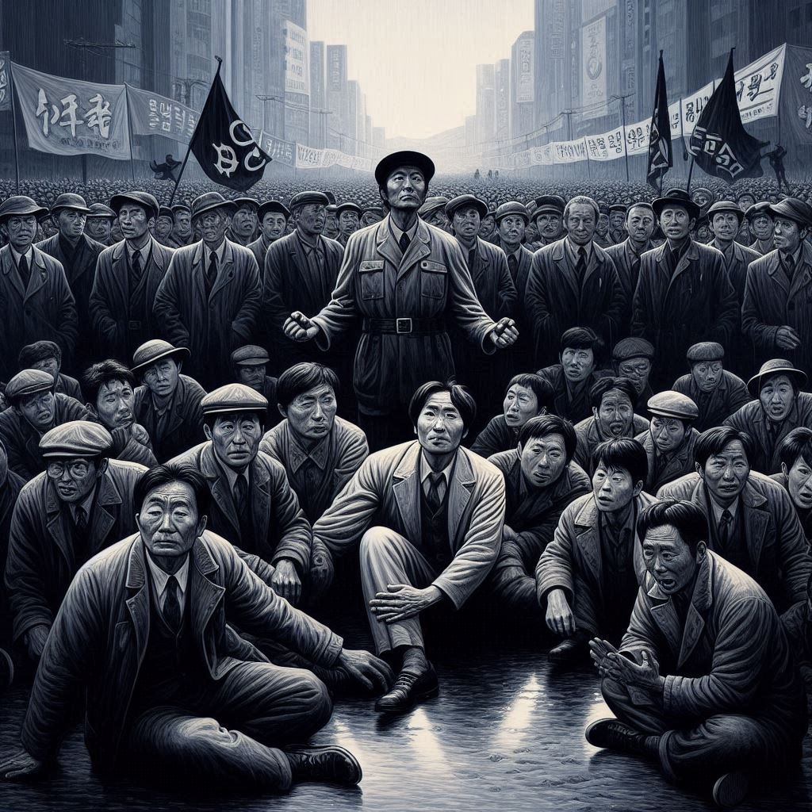

소년이온다
목차
작가
한강
출판일
2014년
감상평에 대한 AI그림
사람들의 삶이 얼마나 피폐한지를 생생하게 보여주는 소설이고 상실과 슬픔의 감정을 느낄 수 있는 책이다. 한 소년의 죽음을 통해 드러나는 국가 폭력의 잔혹함과, 그로 인해 산산조각난 사람들의 내면을 섬세하게 묘사하면서 침묵 속에 묻혀 있던 역사의 상처들을 되돌아 볼 수 있는 책이다.

감상평에 대한 AI평가
~~~~AI평가~~~~~
✨ 구체적인 내용: 국가 폭력의 잔혹함과 그로 인한 사람들의 내면적인 상처를 생생하게 묘사한 부분이 책의 내용을 잘 요약하고 있습니다.
✨ 감정적 공감: 상실과 슬픔의 감정을 느낄 수 있다는 표현을 통해 독자들이 느낄 감정을 잘 전달합니다.
✨ 역사적 상처: 침묵 속에 묻혀 있던 역사의 상처들을 되돌아볼 수 있게 한다는 문장을 통해 책이 전하는 중요한 메시지를 분명히 합니다.